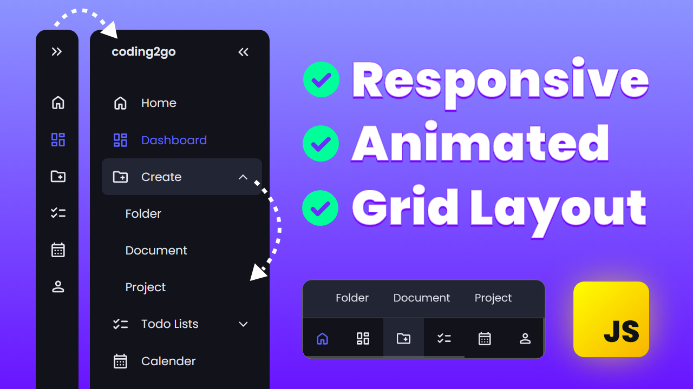
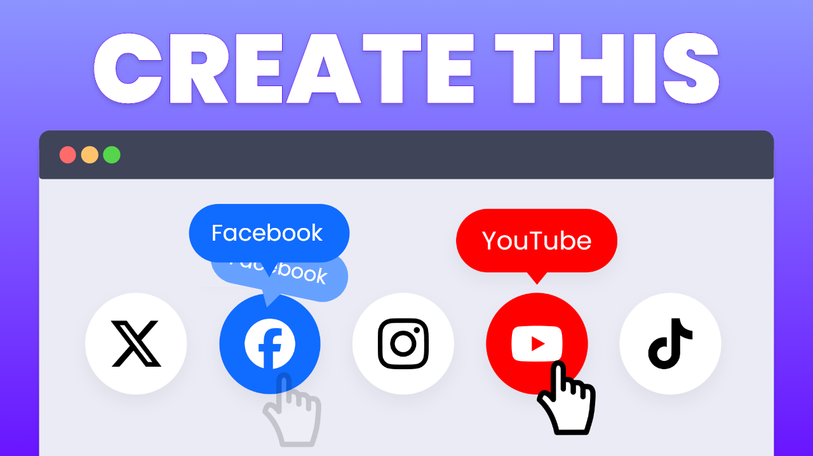
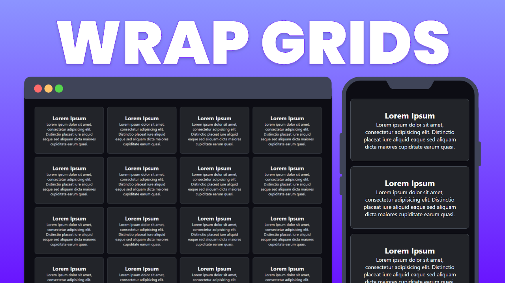
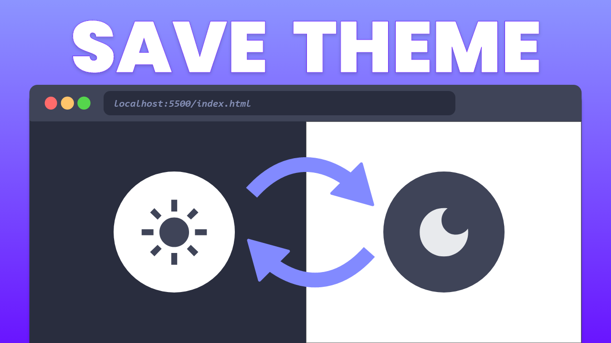

Tahamina

You can find the source code for every tip in the zip folder. Each tip has its own html file.

Build a Responsive Sidebar Menu with Animated Dropdowns
This HTML, CSS and JavaScript Project is a collapsible and animated sidebar that uses modern icons, css grid and smooth transitions. It is the optimal sidebar for your dashboard application.

Animated Social Media Icons with HTML & CSS
This is the perfect addition to your website. Link all your socials at the bottom of your website to build a great following.

Create a Responsive Grid Layout with Grid Wrapping
Learn how to adjust the amount of columns in a css grid layout to respond to different screen sizes using the repeat() and minmax() functions in css..

Create a Dark Mode Switch with HTML, CSS, JS
The button will change its icon from moon to sun depending on the current theme of the website. The website will also remember the theme so that the stored theme will be used when the user refreshes or returns to the website after a few days.